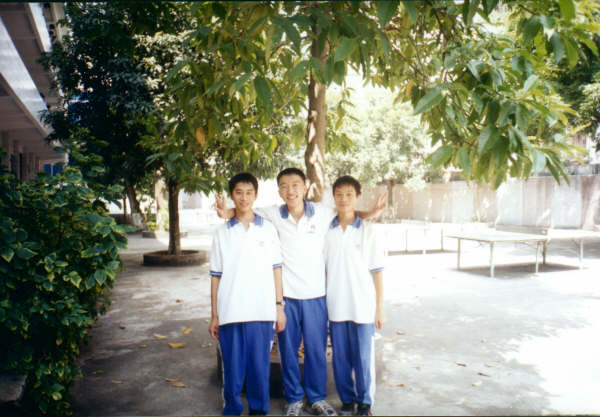
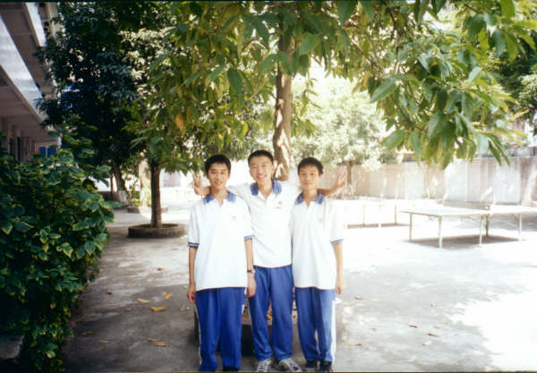

Be My Friend Forever
5/31/2005 2:53:44 AM
Kevin 曾经是我最好的朋友，但是因为一些事情感情变了质。
事情过去有一段时间了，我不堪回首，只是觉得当时大家也只是孩子...
现在也是。
Kevin 是一个很有才华，很有魄力的男孩，和 Xiaoxiao 一样，他们两人是我最敬佩，也是在我心中一直占据非常重要地位的朋友。那一种默契，那一种信任，让我们一起创造了无数的奇迹，那些现在我回想起来也深感不可思议的奇迹。慢慢发现，缺少了他，我的创造力受到了一定程度的摧毁。他是影响我最深远的好友之一，时至今天，在我心中还没有这么重份量的朋友出现过。
我们三人曾经策划并发展 H2O Networks 只可惜 H2O 最后胎死腹中。
以至后来为了纪念这一个概念，我的软件作品依然以 H2O 的名义发布。当然，休学一年的在外创业时间中，我的 H3O 最初的萌芽也源于此。
最近，我正在筹备的另外一个工作室：Honeo.Networks 正是这一意念的回归。
是生命的巧合安排给了我的人生一个美丽而伤感的遗憾。
时光给我无穷的遗憾，无穷的伤感，同时给了我珍惜的动力与做人的领悟，今天，当我发现这份感觉的时候，希望还是不会太迟。
今晚偶然看到，Kevin 在线上，点击聊了一会，仿佛几年过去了，感觉还在，不知道他是怎么想。这几年，我们的生活中几乎没有交集，零散几次的碰面，不是在QQ就是在MSN，线上简短的问候和交谈寒暄仿佛成为了一种友谊的特殊形式的寄托与怀念，感谢互联网给我的这种寄托与怀念。
也许一切也不重要了，在他的新生活中，他有了他的新朋友，有了自己事业的良好契机。然而我，也正一步一步往我的目标迈进。远在 U.K. 的 Xiaoxiao 我想也是在艰辛的寻梦之旅中。希望昔日我们三人的最佳组合，终有一天可以成熟起来，仗着结实的翅膀，翱翔在我们应有的高度！
最后，分享一首老歌《一人有一个理想》送给我的两个朋友：
--------------------------------------------------------------
我最向往是日痴夜缠情人身边
为热恋生活并不在乎人生肤浅
我最爱的是尽握大权立地顶天
事事要领先怎么可以回顾心软
你若投入就有我支持
即使志愿我们难一致
但理想再不相似
亦可一人一种舞姿
接近麻木地对你支持
多么幼稚任性也可以
若你想你尽管试
想爱谁想怎么处事未介意
我最向往是直冲直撞潮流尖端
为冒险生活并不在乎人家指点
我最爱的是为天下人落力表演
但愿搏世间衷心一笑融化积怨
*你若投入就有我支持
即使决定我们难一致
就算性格不相似
亦可一人一种舞姿
接近盲目地对你支持
这些正是朋友那本意
若你要我的一票
只对人即使不对事亦赋予
--------------------------------------------------------------
然而无论发生什么事情，我想我们始终是一辈子的朋友。
因为我相信，那些为你留下真心眼泪的，才是真正的朋友。
感谢他们。
又是我这个夜猫子休息的时间了，大家晚安！
我要开始我的 寻“梦”之旅 了，呵呵！
 

- 5/31/2005 11:14:59 AM
Don't leave me~~ 曾经有一段日子让我深切感受到男女间纯粹的友谊 我还是很怀念我们三个人的日子 那时我们很单纯，很开心 我想这种快乐不会再出现在我的人生里 高中那段时光对我而言非常重要 真的，真的很感谢你们给了我这段回忆 大家都要好好过 我相信我们总会有一天再聚在一起的